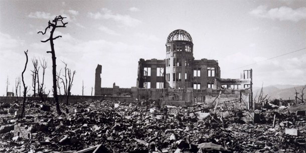
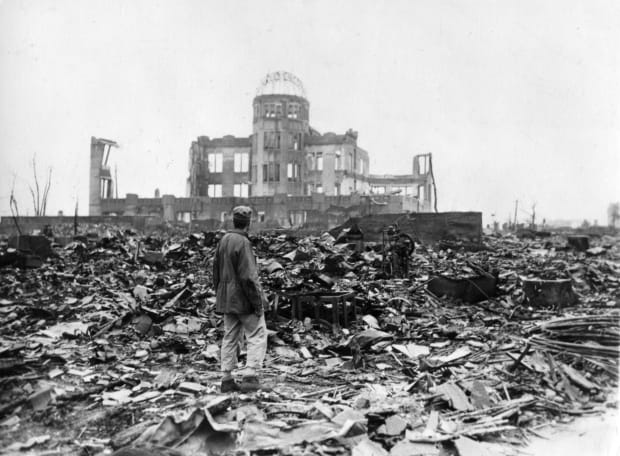
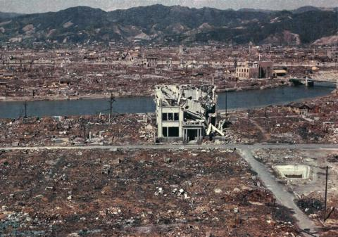
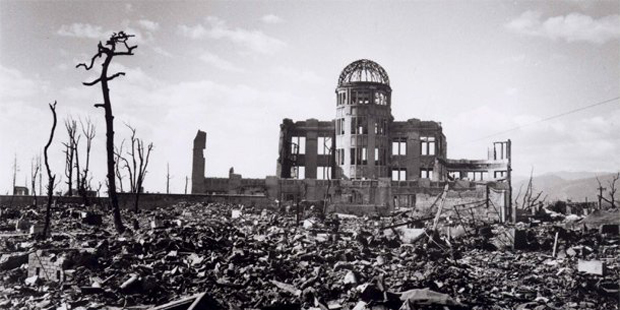
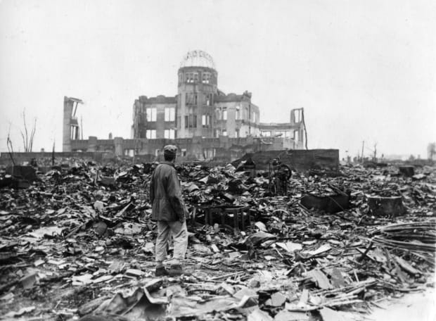
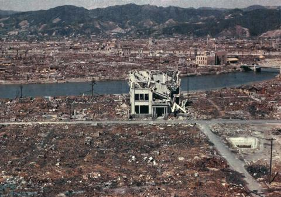

Hi! Welcome To Sarva's & Kamalesh's Page!
Click on the buttons on the navigation bar on the top of your screen to explore the horrors of the Bombings of Hiroshima and Nagasaki! Also, check out the famous quotes from these bombings on the bottom of your screen!
 





Quotes
1. “You are only given One life, So cherish this moment Cherish this
day, Be kind to others, Be kind to yourself” - Yasujiro Tanaka,
1975
2. “I pray that every human being finds peace.” Matsumoto Shigeko - 1977
3. “Dear young people who have never experienced war,
‘Wars begin covertly. If you sense it coming, it may be too late.’ -
Takato Mishishita, 1978
4. “Peace is our number one priority.” - Sachiko Matsuo, 1983
5.“The next war may have no winner only terror”, Yoshiro Yamasaki - 1983
6. “When we start wars they will end one day but If the World chose
peace at once, We will be follow forever.” - Kumiko Arakawa, 1992
7. “If we rid ourselves of greed and help each other instead, I believe that we will be able to coexist without war. I hope to live on with everyone else, informed by this logic.“, Masakatsu Obata - 1999
Note: The Following Webpage was made by Sarvajith Karun and Kamalesh Motamarri. Please do not copy this website without our permission!